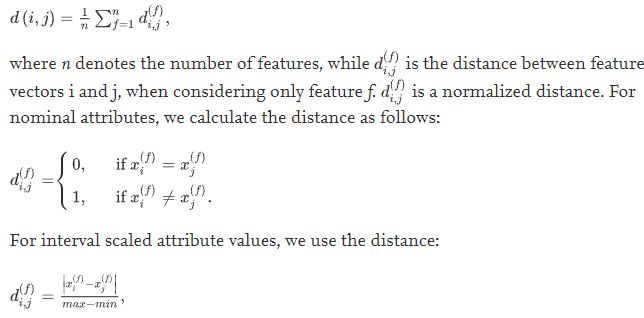

Research Tooling

Automated process discovery techniques enable users to generate business process models from event logs extracted from enterprise information systems.
Traditional techniques in this field generate procedural process models (e.g., in the BPMN notation). When dealing with highly variable processes,
the resulting procedural models are often too complex to be practically usable. An alternative approach is to discover declarative process models,
which represent the behavior of the process as a set of constraints. Declarative process discovery techniques have been shown to produce simpler models
than procedural ones, particularly for processes with high variability.
Here we see the problem of discovering declarative process models with data conditions. Specifically, we see the problem of discovering
constraints that involve two activities of the process such that each of these two activities is associated with a condition that must hold when the
activity occurs. Here we present and compare two approaches to the problem of discovering such conditions:
-Clustering techniques with Rules extraction technique.
-Redescription mining techniques
Starting from the fulfillment feature vectors, we use clustering to find groups of payloads that are similar. In particular, a modification of the
K-Medoids clustering algorithm is used. With this modification, we can handle categorical attributes as well as numerical ones. In order to compute the
distance between two feature vectors, we use the Gower distance while For interval scaled attribute values, we use the distance:

The K-Medoids algorithm starts by selecting the initial medoids randomly. Then, at each iteration, it computes, for each cluster identified by a medoid
determined in the previous iteration, a centroid containing: for categorical attributes, the most frequent value in the cluster; for numerical
attributes, the average value in the cluster. For each computed centroid, the closest feature vector is assigned as being a medoid of the current iteration.
After obtaining the medoids, each feature vector is assigned to the cluster defined by the closest medoid and the next iteration starts. The clustering
stops when medoids do not change anymore or after N iterations, where N is given as input parameter.
Once the clusters have been constructed, we apply a direct rule-based classification algorithm called RIPPER (Repeated Incremental Pruning to Produce Error
Reduction) to search for their distinct features that could be used to describe them. In particular, we build the classifier by using as feature vectors
the projections of the fulfillment feature vectors on the target payloads and the clusters ids as labels. In this way, we can describe each cluster in
terms of characteristics of target payloads in that cluster. The algorithm builds the rules greedily by adding a new condition using the conjunction operator
as long as information gain improves. The initially obtained rule set is then pruned and simplified. The output of RIPPER is a decision table. For a 2-class
problem, RIPPER selects one class as positive and the other as negative, and then learns rules for the positive class. The negative class is described by the
default rule (none of the above rules are satisfied). For multi-class problems, it picks the class with the smallest prevalence (fraction of instances that
belong to a class) and considers it as the positive class, while all the other classes are considered to be negative. In such a way, it transforms a multi-class
problem into a 2-class problem. When the rules for the positive class are discovered, this class is not considered anymore and the algorithm picks the next
smallest class as positive class, while correspondingly treating the other classes as negative. The procedure repeats until 2 classes are left.
Then it solves the 2-class problem as it was described before and the class with the largest representation becomes the negative class.
Redescription mining is a family of unsupervised descriptive knowledge discovery approaches that aim at finding correlations between subsets of elements in a
dataset by using two or more disjoint sets of descriptive attributes. In particular, the input of a redescription mining algorithm is a tuple (E,Vl,Vr,Al,Ar) ,
where E denotes a set of entities that are characterized by two different views Vl and Vr, respectively. These views are described by two sets of attributes
Al and Ar. In our case, the entities are the fulfillment feature vectors, the views Vl and Vr represent activations and targets of these vectors, and Al and Ar
are the attributes of their corresponding payloads.
The output of the algorithm is a set of redescriptions R that describe relations between the two different views. In particular, a redescription r belongs to
is a logical formula that consists of two parts, rL and rR, where rL contains literals from Al, and rR consists of literals from Ar, respectively.
There are two types of redescription mining approaches. The first approach is based on classification and regression trees. The main idea is to
iteratively grow two decision trees (one for each view) that will be joined in their leaves. The trees grow in an alternating way, meaning that
the prediction vector derived for one tree in a certain step is used to grow the other tree in the next step.
An alternative approach is to grow the redescriptions greedily, starting from a pair of singleton queries (i.e., one variable on each side) and extending them
by appending a literal on either side using conjunctions or disjunctions. This procedure can be stopped when the maximum length of a query is reached or when
the addition of a new condition does not improve the accuracy of the redescription. In this paper, we will consider a tree-based redescription approach called
SplitT [21] and a greedy algorithm called ReReMi.
We presented two approaches to enhance Declare constraints with data conditions that relate the occurrence of pairs of events in a case of an event
log (correlated data conditions). The first approach combines clustering and rule mining techniques, while the second approach relies on Redescription Mining.
Overall, the experimental results show that the clustering-based approach outperforms Redescription Mining in terms of its ability to rediscover constraints
artificially injected in a log, in terms of number of conditions discovered (lower number of conditions), and in terms of computational efficiency, when the
number of feature vectors is not significantly high. However, the experiments showed that the accuracy of the clustering-based technique is highly dependent
on the number of clusters given in input. Hence, this technique requires careful parameter tuning.
The experiments also showed that the Redescription Mining approaches discover constraints with higher confidence (and lower support). This latter observation
suggests that these techniques may be used to effectively discover outlier behaviors, i.e., constraints that are less frequently activated, but, when activated,
are in most of the cases satisfied.
For more information vist this site:
https://www.sciencedirect.com/science/article/pii/S0306437919305344